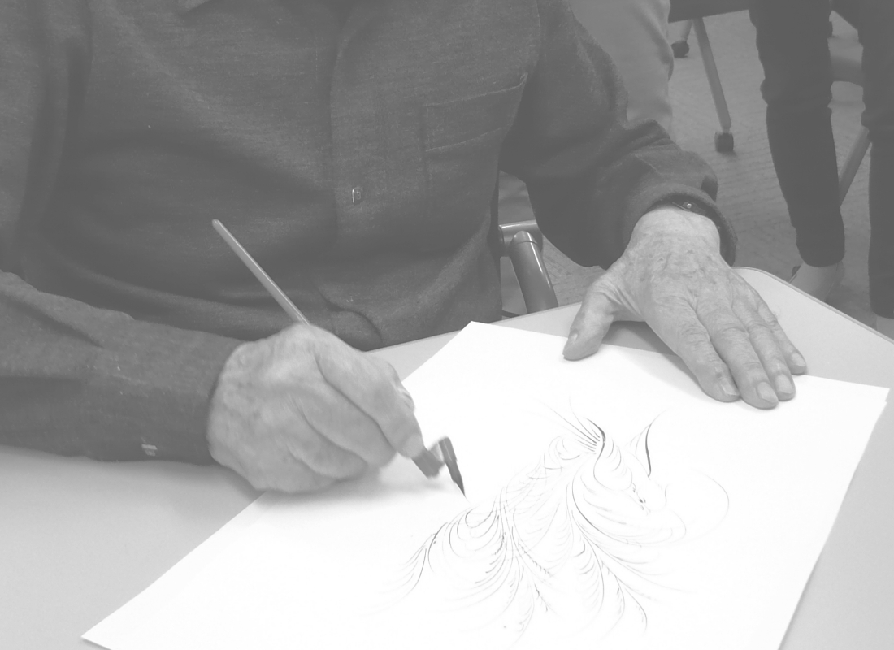
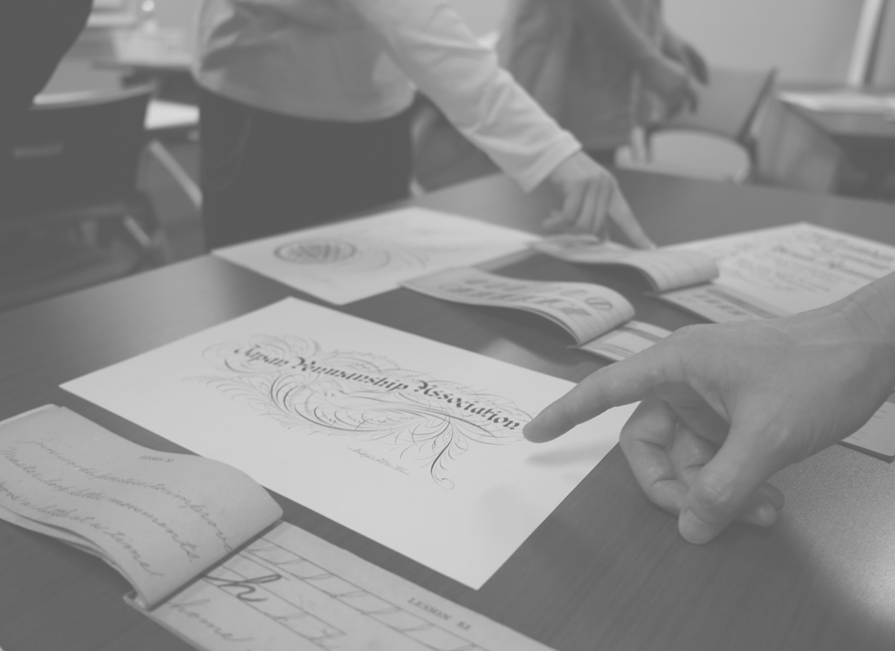
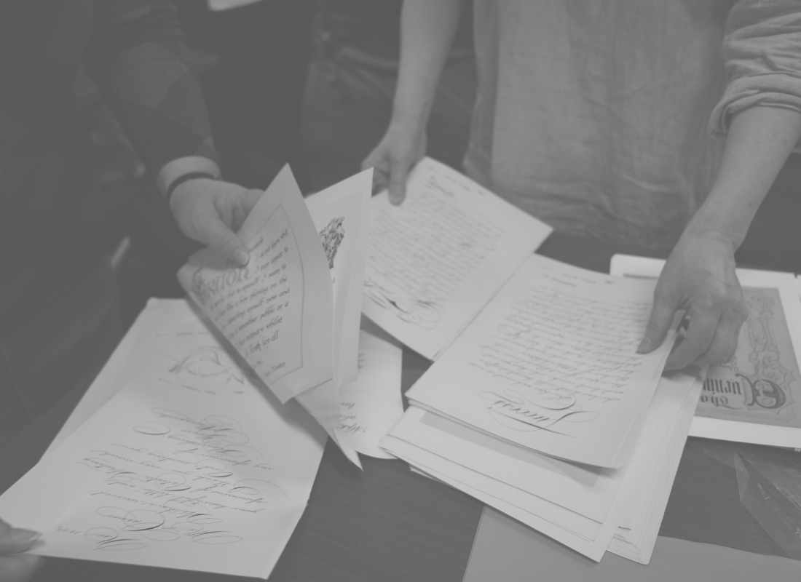
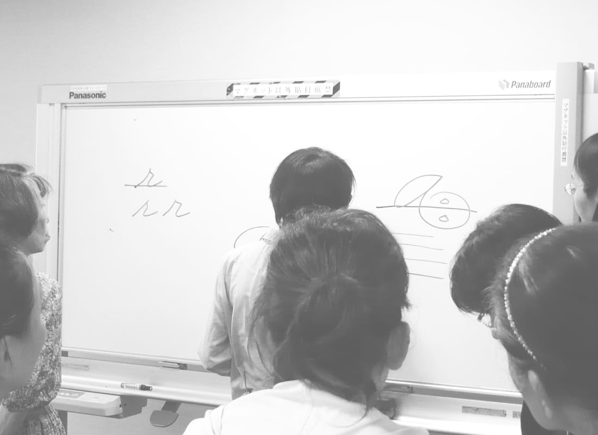
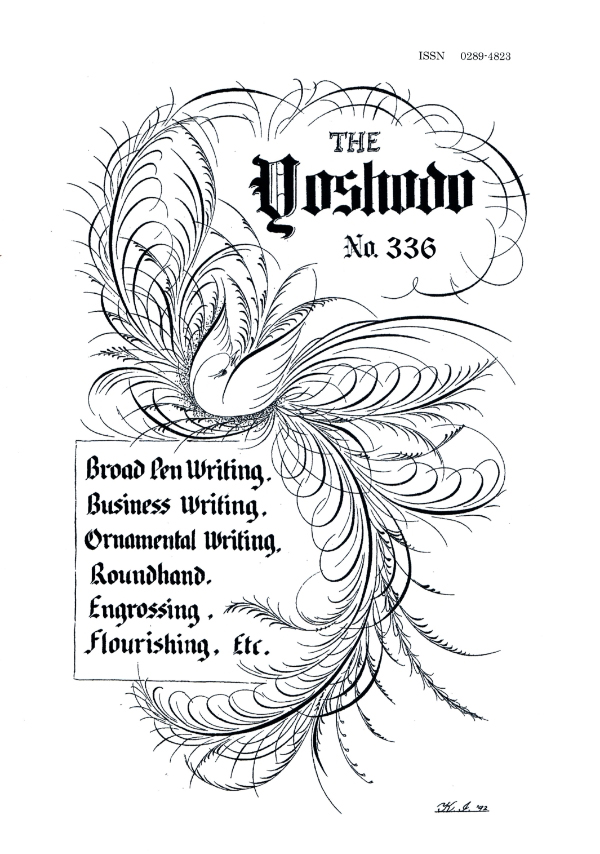
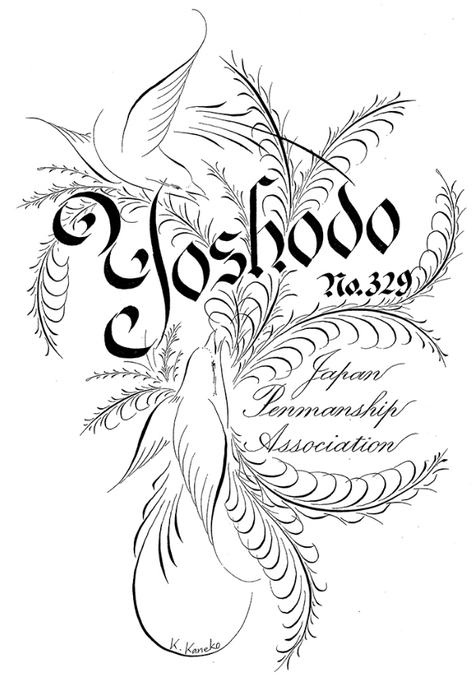
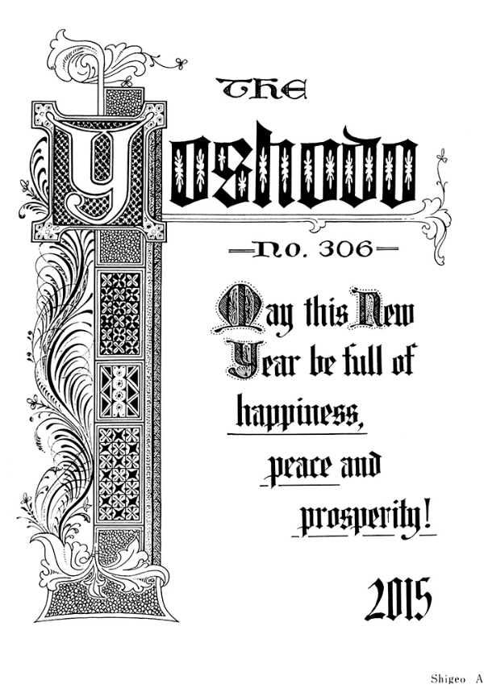

About Us
日本ペンマンシップ協会について日本ぺンマンシップ協会は、幅広い方にペンマンシップに
触れていただける活動を行っています。
The Japan Penmanship Association is committed to providing a wide range of people
with opportunities to experience penmanship.
20世紀初めに、吉田一郎氏がアメリカの学校でペンマンシップ学び、日本のペンマンシップの歴史が始まりました。戦後になり、以前からペンマンシップをやられていた方々が呼び掛け、始まったのが JPA となります。 現在もペンマンシップ技術の向上と継承、会員相互の情報交換・交流を目的とし活動を続けております。 ペンマンとして活動されている方以外にも、日本の書道はもちろん、近年はカリグラフィーから始められた方やアラビア書道と並行して習得されている方、趣味はもちろん、教職員や普段は文字を書く機会が少ない職種の方など、多彩なメンバーで構成されています。 デジタル時代の今、手書きの魅力が高まっており、自身の手でそれらを生み出すことができる可能性を体験できる場所でもあります。貴重な文化の技術継承、情報交換のお仲間になってくださる方をお待ちしております。
The history of penmanship in Japan started in the early 20th century, when Ichiro Yoshida returned to Japan after studying penmanship in the US. After World War II, penmen in Japan established the JPA. Today, the JPA continues its activities to create a space where members can exchange information, learn and pass down knowledge and techniques to future penmen. Besides professional penmen, our organization includes members with various backgrounds including those who first studied traditional calligraphy like Japanese calligraphy, members who are simultaneously studying Arabic calligraphy, scholars, and even those whose work doesn’t normally require them to write down words. Through our monthly meet-up in Tokyo we offer the opportunity to meet other members, to learn and practice penmanship, critique each other’s work, and even study rare books. On our quarterly newsletter YOSHODO, we share news about our members’ projects and additional information about penmanship. Penmanship

Activities





ペンマンシップ技術の向上と継承、
会員相互の情報交換・交流
首都圏からだけでなく全国からJPA会員の方が参加され、活動の中心となっています。
意見交換・練習法指導
元来、定例会はペンマン同士の意見交流はもちろん、技術を切磋琢磨する場として開催されておりいました。 近年の定例会では、会員同士による習作への意見交換、添削、練習法の指導などをを行なっておりますが、 初心者の方の参加も可能です。文字を書いている時の姿勢・手腕の動きも習得するための重要な要素となりますので、実際に見ることにできる非常に貴重な場となっています。
会員同士の交流
JPAの会員は、レッスン教室などで指導されたり普段から作品製作をされたりしている方だけでなく、 普段はあまり文字に接する機会の少ない職業の方など、男女問わず様々な職種の方で 構成されています。また、時折開催される懇親会は、より交流を広げる場となっています。
イベントや合同講義
年に１回行われる総会では、定例会よりも多くの会員の方に参加いただけ、年間の協会の運営報告・ 今後の方針などを相談するだけでなく、ツールに関するイベントや合同講義なども合わせて開催しています。
資料の閲覧
海外のペンマンから JPA関係者に送っていただきましたお手紙や、長い歴史の中での貴重な本・ 作品など、他では見ることができない資料を会員が持ち寄り、それらを閲覧しながら学習すること ができる有意義な時間を過ごしています。
定例会の見学を行なっています。
まずは、こちらからご連絡ください。



季刊誌『洋書道』の発行
日本ペンマンシップ協会が発行する季刊誌『洋書道』のタイトルにもなっています。
季刊誌『洋書道』は、年に4回、会員向けに発行しております。
定例会の報告やペンマンシップについての情報、テーマに沿って書かれた会員の作品投稿などが掲載されています。
過去の『洋書道』(32号 1947.8~)は、国立国会図書館に保管されています。
請求記号Z11-1373 国立国会図書館書誌ID:000000040289
協会概要
-
名称
日本ペンマンシップ協会
Japan Penmanship Association -
設立
1967（昭和42）年
-
URL
https://japanapenmanship.org
-
代表
阿部久代
-
理事
金子薫
-
理事
嘉陽君子
-
理事
阿部久代
-
理事
早川明美
沿革
-
1911年
吉田一郎氏、肉筆による洋書道個人教授を開始
-
1913年
大日本英習字研究会（Japan Correspondence School of Penmanship:JCSP）発足
-
1918年
JPSC研究機関誌『英習字研究』創刊・全国でJCSP支部設立
-
1922年
吉田一郎氏『中等学校用英習字教科書』指導書『英習字教育の理論と実際』（ともに三省堂）発行
-
1923年
関東大震災・この年より昭和12、3（～1938）年頃にかけて各地で優秀なペンマンが独自の研究会を発足。 研究誌(会報)や回覧誌を発行し活発に活動
-
1930年
ラサール英習字学校（Lasalle Extension School of Penmanship:LESP）開校（4月）
LESP機関誌『Penman』創刊（7月） -
1932年
ラサール英習字学校主催「全国中等学校英習字競技会」開催
-
1933年
ラサール英習字学校主催「全日本英習字競技会」開催（3月）
イースタン英習字学校（Eastern Penmanship Correspondence School : EPCS）開校（8月）
EPCS月間研究誌『Eastern Penman』創刊 -
1942年
戦時における敵性文化として圧迫を受け、三機関ともに活動を休止・各地の同人研究誌も次々と休刊（1942年頃）
-
1943年
岩手県水沢の研究会 北上ペンマンクラブにより発行を続けていた同人研究誌『北上ペンマン』廃刊 『北上ペンマン』の印刷を請け負っていたメンバーにより『洋書道』第1号発行 戦中も発行を続ける
-
1948年
吉田一郎氏逝去
-
1952年
第三回国際ペンマン会議より招請を受け、全日本英習字連盟員作品参加・海外ペンマンとの交流再開
-
1970年
協会作品集『Penmanship in Japan』発行（限定本）
-
1980年
『洋書道』が国際標準逐次刊行物としてISSN取得
-
1980年
『洋書道』が国際標準逐次刊行物としてISSN取得
国会図書館に94号から納本（欠番除く、ISSN表示は188号から） -
2022年
協会発足より55年目を迎える。12月現在会員数43名。季刊誌『洋書道』は第367号を数える。